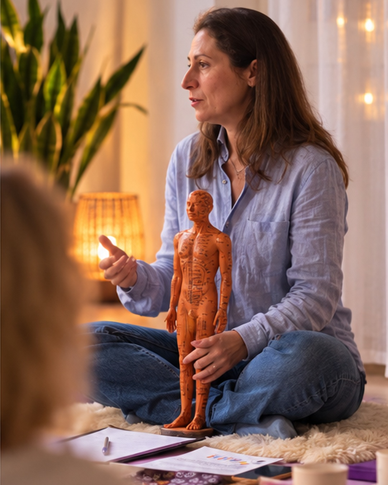

Schiena, collo e muscoli
- Mal di schiena e sensazione di rigidità.
- Collo e cervicale indolenziti, spalle sempre tese.
- Tensioni muscolari dopo giornate alla scrivania o attività fisica.
Il benessere nasce dall'ascolto. Attraverso i trattamenti di Medicina Tradizionale Cinese, lo Shiatsu, lo Yoga e pratiche dedicate al corpo e al respiro, ti accompagno in un percorso di maggiore consapevolezza.

Le pratiche proposte sono complementari e non sostituiscono il parere del medico, la diagnosi o le cure.
Non serve conoscere lo Shiatsu o la Medicina Tradizionale Cinese per iniziare. Puoi raccontarmi cosa senti nella vita di tutti i giorni: partiamo da lì per capire insieme quale spazio di benessere dedicarti.
Ogni persona ha una storia diversa: ti spiego il mio approccio e valutiamo insieme se un percorso complementare di benessere è adatto alle tue esigenze.
Raccontami di cosa hai bisogno ↗Ogni persona ha esigenze e ritmi diversi. Esplora le pratiche proposte e scegli da dove iniziare.
Nei miei trattamenti mi ispiro alla visione della tradizione cinese: corpo, mente ed emozioni fanno parte di un insieme. Parto dall’ascolto per concordare con te un percorso personalizzato di benessere.
Nel percorso possono trovare spazio anche tecniche complementari come la coppettazione. Se pratichi sport e senti i muscoli affaticati o tesi dopo gli allenamenti, raccontami il tuo carico di attività: valuteremo insieme il percorso e l’eventuale uso delle coppette.
Ti propongo uno spazio dedicato al contatto e all’ascolto del corpo. Scopri la pratica Shiatsu e come possiamo costruire insieme il tuo percorso.
Scopri lo Shiatsu ↗Movimento, respirazione e meditazione in una pratica che invita a coltivare presenza e consapevolezza. Le modalità dei corsi sono da confermare.
Chiedi informazioni ↗Spazi di pratica personalizzati per dedicare attenzione al respiro e al movimento. Disponibilità e caratteristiche su richiesta.
Scopri di più ↗Lo Shiatsu è una pratica manuale di origine giapponese che utilizza il contatto e pressioni esercitate con le mani, in un approccio attento alla persona nel suo insieme.
Un momento per rallentare, dedicarsi al proprio corpo e coltivare una sensazione di presenza e benessere.
Se ti riconosci in queste situazioni, possiamo partire da ciò che senti:
Ti propongo un incontro centrato sull’ascolto e sul contatto, concordando insieme modalità e intensità.
Prima dell’incontro ti comunicherò durata, costo e disponibilità. La richiesta non costituisce una prenotazione confermata.
Sono Marcella Cavallo e mi occupo di pratiche per il benessere attraverso i trattamenti di Medicina Tradizionale Cinese, lo Shiatsu e lo Yoga.
Credo nell'importanza di accogliere ogni persona nella sua unicità, dedicando tempo all'ascolto e costruendo un percorso rispettoso delle sue esigenze.
Il mio percorso di approfondimento comprende lo Shiatsu, la Medicina Tradizionale Cinese, lo Yoga e il Kundalini Yoga. Sono discipline che porto in dialogo attraverso una visione globale della persona e una formazione continua.
Parliamone ↗Ogni incontro nasce da una relazione. Ti accolgo con il tempo e l’attenzione che la tua storia merita.
Iniziamo con un momento di ascolto: la consulenza orientativa, per conoscerti e comprendere le tue esigenze.
Ti propongo un percorso personalizzato, rispettoso del tuo ritmo. Ogni persona è unica, ogni incontro è diverso.
Al corpo, al respiro e alla consapevolezza. Un tempo per fermarti e dedicare attenzione al tuo benessere.
Scegli il percorso e la sede che preferisci: Monticello o Missaglia. Concorderemo insieme il giorno e l’orario del tuo incontro.
Puoi preparare qui la tua richiesta e copiarla per inviarmela via email. Nessun dato viene inviato automaticamente o salvato dal sito.
Preferisci scrivermi direttamente? ↗Puoi preparare la richiesta con il modulo, copiarla e inviarmela via email, oppure contattarmi al telefono. Ti risponderò per concordare disponibilità e dettagli: la richiesta non conferma l’appuntamento.
Sì. Puoi scrivere per ricevere indicazioni sulle pratiche offerte e sulle modalità disponibili.
Il modulo prepara il testo della richiesta solo nel tuo browser: il sito non lo invia né lo archivia. Puoi copiarlo e scegliere di inviarlo con la tua posta elettronica. Non sono utilizzati strumenti di analisi, cookie di profilazione o risorse di terze parti incorporate.
Per chiarimenti sul trattamento dei dati nelle comunicazioni puoi scrivermi a cerchiodellasalute@gmail.com.